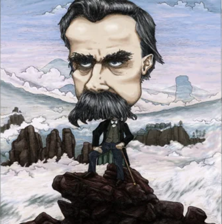

O cigano é ¿¿¿ nômade ??? Qd desconstrói à s 1a y 2a capturas plutocráticas 💰💱💸 q rebaixam nossas participações ¿democráticas? Vi vi👀sões vigiadas 🎶
Subordinadas à s segundarias 💸 há uma 3a captura na superfÁcie d’encontro c/ o desejo💃então ¡¡¡ Há !!! ¿intencionalidade? Tb 😠na relação c/ o presente econômico ¿¿¿ sim !!! i💲💲o é o acontecimento p/ 4ª captura y assim 😒 criam conexões ‘hackeadas’ d participação🌲ğŸ€ğŸŒ²efetiva na ¡¡¡ Matrix !!! d ¿tipos? reativos🙈🙉🙊publicitários 👈 separados 👉 dus receptores 👋👂👃👀👅 du mundoğŸŒreal 🧠nosso corpo🧘orgânico 💰 colocado 🛀 em idiótica💸dÁvida plutocrática d existência a pagar u im’undo🗺plano criado mecânica🤖mente nua 👙 existência🚼abiótica d existir !¿! como ¡?¡ um novo🙇criado virtual invertido 🙃u investido n’afetiv’acultura💰💱💸plutocrática 🎶
Modo construtivo〠aprisionado pelo campo afetivo🤪Ativo teu modo desconstrutivo du modo reativo q gera tolerância a pp ignorância das competências 🙈🙉🙊 intenciânais🤥Institucionai💲 representativo💲 du fenótipo🤣frágil fraco 👈covarde👉 acusa ¿¿¿ ou ??? c culpa !!! Há 💠inoculada🙈🙉🙊sociedade dentro du dominante😒passivo recessivo 🥴 ativo👉cúmplice 🥺 subordinado au 🕠dominanteğŸ›Â½ğŸ§»artificial💩virtual🧠intensivo🚼instituÁdo na imaginação du ideal corpo s/ órgão âš” expressão du fenótipo nu🩲corpo real interagindo c/ a realidade du ½ externu🩲concreto p/ abstração nu ¿¿¿ pensamento !!! ou da ¡¡¡ mente ??? então !!! Há representação ¡consciente? 😠na representaçãoğŸteatral da ¿imagem🤔inconsciente! Nu 👙 real ou nu 🃠imaginário 🙈🙉🙊 o ato agir causa efeito🤯pensar ≠d imaginar uma imagem afetiva d recepção dus sentidos ou ressentimentos 🤬 encontros q decompõe nus 🩲 separam 🤮 encontros q compõe nus 🩲 unem 🙄ğŸ˜ğŸ¤ª na pdç d recessivos p/ usos d dominantes :( desejos suprimidos :( desejos prometidos :( promessas d falsos🤥desejos 1000 publicidades👿goebells 💪💀🖕 qual dus teus sentidos torna o pensamento à receptores 🤑 cúmplice da construção d uma realidade🥺🥶🥴mental transformadora d organismos em objetos receptores dus poderes isolados dus sentidos da realidade na publicidade inoculadora d desejos “naturalmente†banalizados p/ servir a uma tecNOmultinaciânal📱dominante 🖕😼🖕 divulgam seus 🤖signos〠robotizados🤖 imagens 🧜 paixões 💃 sentimentos 🤠solidão 😬 imaginar é ≠d pensar 🤔 com’usina d pdç d singularidade d🤪afetar y ser😵afetado vÁtima💑du👪amor ¿ou! vÁtimağŸ‘du👬ódio 🤨 kem é Inimigo🦿impotente ¿tb! Potente💪inimigo LUIZ FUGANTI retomandu 🶠u tempo 🕛 é dilatado 🕕 na linha â¤
♪ Poema Comentário Du Portador* *Enviar p/ indiocinzento@gmail.com * * * * * * * * * * * * * * * * * * * * * * * * *♪
♪ ♪
♪ ♪
♪_ _ _ _ _ _ _ _ _ _ _ _ _ _ _ _ _ _ _ _ _ _ _ _ _ _ _ _ _ _ _ _ _ _ _ _ _ _ _ _ _ _ _ _ _ _ _ _ _ _ _ _ _ _ _ _ _ _ _♪
⤠d duração â³ Há o encontro 🚷 du perigo d abandonar u sistema🥈🥇🥉exter🩲nu d formação🔫implantado BERGSON modo dominante d estilo d ¿vida? controle dus ½ d percepção ğŸŒğŸŒğŸŒ dus sentidos✺vÁrus💰economi’abióticos 👿 corrupção d auxÁlios💰plutocráticos nas bolsas👜💱💰valores d sustent’ação d respostas recessivas à democraciağŸŠrepublicana ğŸŠsubmetidas🊠à publicidadeğŸ’eleitoral 😒 Há democracia dus vÁrus ¡ ciberabióticos ? au 🕠dominante neoliberal da economia ✌ O poder abstrato coletivo objetivo público âš” O poder concreto individual subjetivo privado ⛲ filosofia experimental da recepção dus sentidos ğ„¢ na expressão ğ„¢ dus comportamentos comuns em’im y coletivos n’outros 🗨esvaziar💠binária dialética da dualidade🧠mente🚼corpo DESCARTES in SPINOZA dicotômica da matéria y energia das reações interativas inorgânicas y orgânicas na vid’abiótica y mortebiótica💀necropolÁtica decretam 🛂 com’algumas pessoas podem viver 😈 com’outras devem morrer 👻 onde ¿¿¿ há !!! distribuição desigual da oportunidade d viver y morrer 😒 t/ republicanağŸŠğŸŠğŸŠcorrupção c/ o sistema capitalista💱biopoder💰plutocrático V🧻S ¿¿¿poder📚social!!! representativo💱polÁtico p/ controlar y disciplinar a vida das pessoas escondendo à fakeğŸ‘participação ğŸ de💲💲a midiota🙈🙉🙊comunicação da realidade 💱👹💱 publicitária🙈🙉🙊midiática 🖕 au 🦮 coagir vc 🩠julga a💲💲oa💲💲inar sua conexão🙌orgânica destruÁda à conexão🚽telespectadora ⛇ d ⛇ subcidadania FOUCAULT kestionando os significados 💩 existentes 😠preenchemos 🚽 perguntando os significados inexistentes 🤬 extraindo na cena du acontecimento o pensamento 🤯 na linguagem 👅 em imagem 👾 s/ som 🕨 y a textura 👌 t/ o gosto 👻 da mente 🧠Há conexão na subjetividade da singularidade à maiêutica d SOCRATES psicanalise introjeções 👙nu🩲 inconsciente FREUD eskizoanálise 😵 múltiplosğŸ˜ğŸ¤ªğŸ˜œinconscientes du pensamento ultrapassam o tempo â³ du cérebro 🧠num’analise du pensamento n’universo🕳vazio 🙀 perpassa’miau 😸 xeio 😻 d 😽 desejo q sustenta 😸 miau ¿¿¿ hum !!! pluralismo real 🦄 simbólico 🦄 imaginário 📵 programadu 📱 p/ separar a recepção dus sentidos 🤯 nu 🧠cérebro consequente🧠mente há percepção sistemática na ecologia c/ conceitos du ambiente nu 🩲 social da mente 🧠dd q vcs DELEUZE & GUATTARI mantenham ¡¡¡ consciência ??? entre as passagens poéticas d miau 😸 loucocentrisma ğŸ atu’ação na eskizo🌩temporal da logocentrisma 🌪 desconstrução d DERRIDA 🎶


Ñ há poema eterno 😿 assim como 😼 Ñ há poesia absoluta 😽 a singularidade encontrada na poesia um encontro au 🕠poema📃singular 😹 y assim 🙀 atendendo à s demandas biodinâmicas da realidade orgânica🤸social 🙌 potencializamos a supressão 💪 da percepção🤑econômica du corpo s/ órgãos👽imposto auğŸ•ambienteğŸ˜vivo à 💸 capital 💸 captura d endividamentos 🥴 resultados da repetição goebbels 🙈🙉🙊 1000 mentiras 🤥 corporativas 🤮pro’paga’ndas💰 y técnicas comerciaisğŸƒilusórias d investimentos 🦾mecânicus🤖 🦿abióticus🤖 à fonte 🧠d pensamentos🚶demitidos ğŸ substituÁdos da realidade orgânica 🌠biodinâmicas p/ 📵 uma 📵 mákina🗺social à respeitar o tem’coro da economia hegemônica nu💃ambiente💰imposto 💱 plutocrático legitimado na força 🛂 da democracia d conduta autorregulada pela moral ¡¡¡ sujeito competente ??? produtor d obstrução âš– da 💃 justiça 🗡 fake🤥news à merdi💲💲iânus penetram as instituições 🤡👹👺 criminosas privadas 🖕y🖕 públicas fundindo-c numa parceria 🙈🙉🙊 criminosa privada💩🚽💩pública midiotas 🤮🤡🥴 à keles 🖕😼🖕 q c infos y creem nas fake🤥news divulgadas das ¡¡¡ concessões ??? à s corporações🙈🙉🙊publicitarias 🤦 prestadoras d serviços🌲ğŸ€ğŸŒ²públicos ??? 🗣📢🗧 comunicações 💻📺📻 produtoras 📡⚟📡 d ğŸ¤Ãdolos🕺 e ilusões metanovelağŸƒğŸğŸ§œpublicitárias 🖳 programadoras d cérebros 🤖 virtualizados 🤖 à s sensações dus sentidos incapacitados 🥴 du devir animal 🅠nosso extinto 🲠biocrata na percepção ğŸ•ğŸ¦œğŸ˜¸ ambientes

Corpo 👻 prisão da alma 🜠mente 🧠corpo 🚶 receptor dus movimentos dus sentidos auğŸ•desejar o medroso corpo s/ órgãos supersticioso aprisionado
🌲🌳🌴 exter🩲nus 🤨 através 👀 👂 👃 👅 👋 dus sentidos receptores à devir nu 🩲 acontecimento da potência c/ educracia nu 🩲 cérebro 🧠agora 🙀 s/ medo dus fantasmas👻produzidos ¿há! fake👻news reais 🤼 são corpo s/ órgãos☯bipolares c/ fantasmas projeções d ideologia binária ☯ grande cansaço 🤠falta♪t desejo 🥺 solidão 🧘 restauradora É ¡ preciso ! amar a si pp y aprender a suportar a si mm 🤸 p/ Ñ vaguear 🥴 fora d si mm 🤸 Profilaxia 💃 impede q nus 🩲 percamos nus 🩲 fluxos q; ñ são nossos delÁrios y alucinações q divertem o pp desejo complacente à s projeções du corpo 👙 s/ órgãos 👻 fantasmagórico 🎶
negacionismo da poesia âš” u kombat âš” perder u medo d viver digitando🖮desenvolvendo a ciência du poema q nus🩲leva a compreender as forças q afetam 🌬 o poeta SPINOZA idealizações sublimação du modo d existência estilo d vida 🤑 à bolha 😋 ignorar realidades y acontecimentos d desenvolvimento 🙀 qt + medo tenho + poder dou à kilo q o representa 👻 kerem as coisas como são ¡¡¡ ou ??? Como kerem ser iludidos 👼 biodi’versos 😠então 😼 com’vices a perceber 👉 a fraude 👉 a fake🙈🙉🙊news 👉 a corrupção 👈〠👉 em q participas s/ saber 😿 encontras♪t a expressão da potência na superfÁcie da 4ª passagem 🖔🖕☠cria🦖tua 🉠potência na zona indeterminação du movimento ğŸ di’latação 🤰 du tempo ;)entre🤷dentro(; du desejo 👈y👉 potência vc pd investir nus ⌛ entretempos â³ capitais 💸 Há crÁtica ¡¡¡ ética ??? culpando à ’moral 😒 em zonas d passagem 🤔 em ressonância c/ o encontro du devir q; nus 🩲 auxiliam a retomada d nossas forças 🎶
Assim escreveu u poema 📠nu 🩲 papel 🗒 A poesia 🙅 pessimista d supostas verdades q impedem miau 😸 criação d realidade 😼 coação du mal q acontece âš” complacência du bem trocado q acontece au 🕠contrário du esperto ESTAMIRA desinvestir nu 🩲 esgotamento du campo d possibilidades 📽 retroprojeções 📹 otimistas da intensão du desejo nu 🩲 campo social 👻 investir na realidade DNA du acontecimento 😠em singularidade c/ o corpo 👙 s/ órgãos intensivo d desejos realizados nu 🩲 campo comunal 😼 conhecer a realidade orgânica q VC pd controlar sua participação e influenciar cooperando c/ o q vc Ñ pd 😠cair nu 🩲 buraco y procurar u xeio fora da imagem vazia projetada na mente🧠xeia d ilusões au 🕠ignorar leis🧠naturais ğ‡’ğ‡“